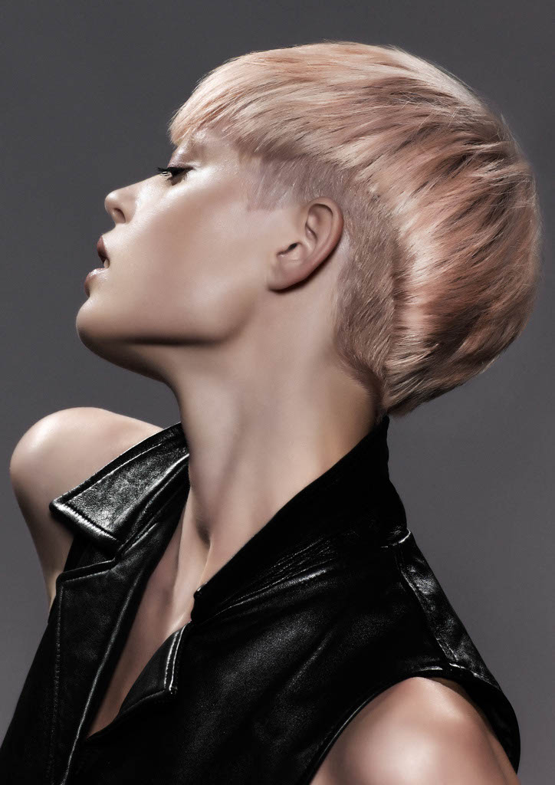
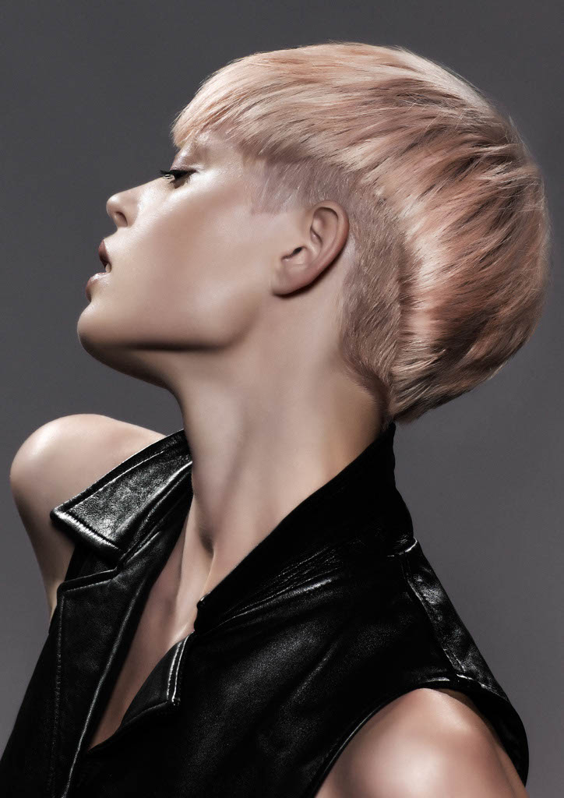

Nobile is known for creating precision colour for some of Australia’s leading celebrities, models and international faces. He is revered for being the person to see when a colour needs fixing and notorious for his expertise with blonde precision colour.
Nobile frequents New York and travels globally teaching seminars, colour presentations and major hair shows. He is renowned for his strong presence in the industry as a platform artist and educator.
Awarded some of the top accolades within the hairdressing industry, Nobile aims is to raise the standard of colouring across the hairdressing industry.
Hair colour is like a beautiful painting, reflecting light and shade with lots of dimension. It should be seamless and continually flow through the hair with perfect harmony. For every look, I work with the complexion, features, eye colour and natural texture accentuating the natural beauty. Great colour should always evolve with the client.
Vincent Nobile.

 

Vincent is one of Australia’s top Educators in his field. Vincent is available for group and one on one training. He specialises in teaching:
For more information contact info@vincentnobile.com
Take advantage of Vincent’s many years of experience and get his help in buiding you business and career. Vincent is availalbe for Consulting and can help you with: